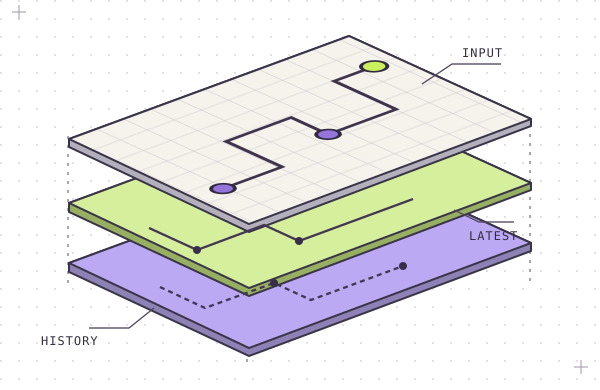
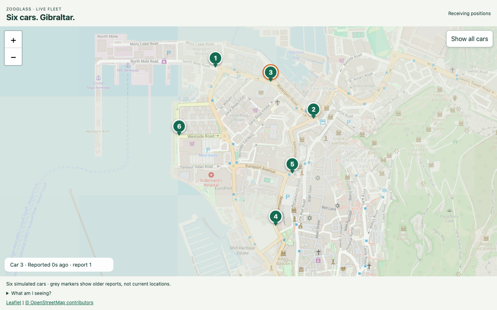

Distributed systems field guide
Event-driven
live views.
Build a live picture from independent event streams. ZooGlass keeps track of what each source reported, even when updates arrive late or twice.
Explore an event stream ↓ZG / FIG. 01View projection

01 Interactive example
The late arrival.
A vehicle sends three position reports. Report 41 takes the long way round. Select a delivery to see the two views it feeds.
Delivery order
Latest position report
42Received history
40 · 41 · 42Report 41 fills the gap in history. Report 42 still supplies the latest position.
Illustrated playback of the ZooGlass ordering rules. Read the ingestion contract ↗
02 Inside ZooGlass
Where the rules live.
- 01 Connect identities
- Your order system knows
order-42. Your payment provider knowspayment-9. A configured mapping brings their updates into the same order view. - 02 Choose a source
- A primary courier can outrank a backup even when the backup has a higher sequence number. Each source keeps its own ordering history.
- 03 Recover a view
- With SQLite storage, ZooGlass commits view changes and publication identities together. After a restart, a source can retry a report and recover its original commit version.
03 Field observation
Six cars in
Gibraltar.
Watch six simulated cars drive real streets. Workbench introduces delayed, missing and duplicate reports. ZooGlass maintains the positions. The map shows when a car last reported.
Run the fleet demo ↗
